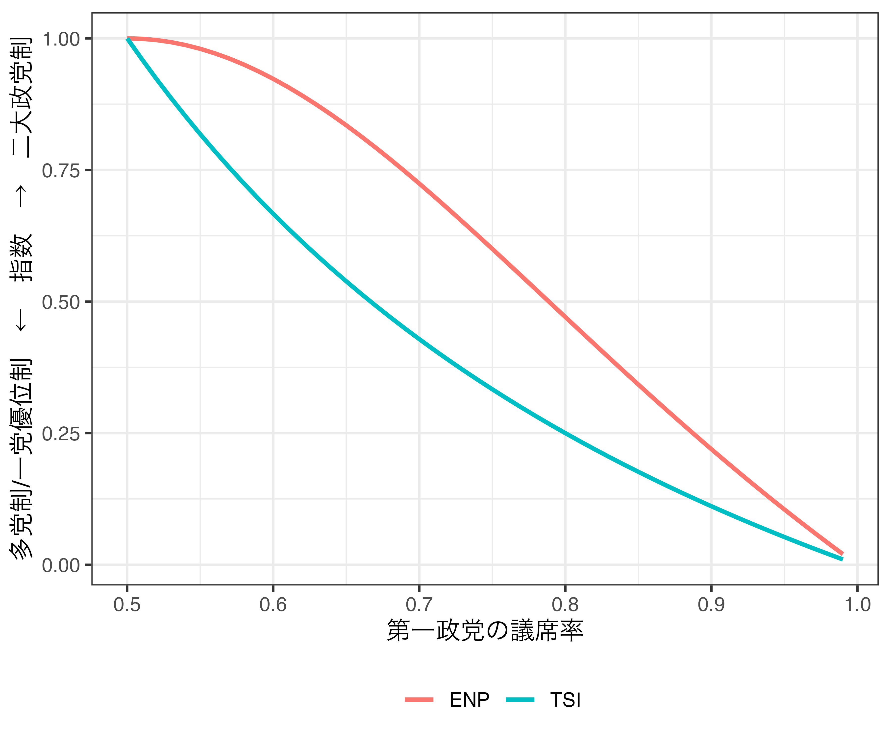

enp <- function(x) {
return((1 / sum(x^2)))
}
tsi <- function(x) {
ss1 <- rev(sort(x))[1]
ss2 <- rev(sort(x))[2]
return((ss1 + ss2) * (ss2 / ss1))
}
compare <- function(x) {
cat("ENP: ", enp(x), "\n")
cat("TSI: ", tsi(x), "\n")
}二大政党制の指標に関する私案
新しい指標の提案
- Two-party System Index (TSI)
- \({SS}_1\): 第一政党の議席率（\({SS}_1 > 0\)）
- \({SS}_2\): 第二政党の議席率（\({SS}_2 > 0\)）
\[ ({SS}_1 + {SS}_2)\frac{{SS}_2}{{SS}_1}, \quad \text{where} \quad {SS}_1 \geq {SS}_2 \]
何を重視するか
- （A）全議席における二大政党議席数の割合（\(({SS}_1 + {SS}_2)\)）
- 1に近いほど二大政党制
- （B）二大政党の勢力均衡（\(\frac{{SS}_2}{{SS}_1}\)）
- 1に近いほど二大政党制
- 0に近いほど一党優位制か多党制
- （A）と（B）の積が1なら完全なる二大政党制（2つの政党がちょうど50%、50%）
- 0に近いほど多党制か、一党優位制
有効政党数（Laakso and Taagepera, 1979）との比較
- TSIはあくまでも二大政党制の指標
- 第3政党以下の議席率は計算に用いない。
いくつかの例を使って比較してみる。
- 議会内に2政党のみ存在する場合の比較
- 比較のためにENPは元のENPから1を引く
library(tidyverse)
tibble(PartyA = 50:99 / 100,
PartyB = 50:1 / 100) %>%
rowwise() %>%
mutate(ENP = enp(c(PartyA, PartyB)) - 1,
TSI = tsi(c(PartyA, PartyB))) %>%
pivot_longer(cols = ENP:TSI,
names_to = "Type",
values_to = "Index") %>%
ggplot() +
geom_line(aes(x = PartyA, y = Index, color = Type),
size = 1) +
labs(x = "第一政党の議席率",
y = "多党制/一党優位制 ← 指数 → 二大政党制", color = "") +
theme_bw(base_size = 12) +
theme(legend.position = "bottom")
実は政党が2つのみだと、そこまで大きな差はないかも知れない。ただ、2つの政党の議席率がアンバランスしている時、ENPはそれでもより二大政党制と評価し、TSIは一党優位制と評価する。2つの指標が大きく異なるケースは、主に議会内政党数が3以上の場合（ここはENPから1を引かない）。
- 4政党: 40%、40%、10%、10%
example1 <- c(0.4, 0.4, 0.1, 0.1)
compare(example1)ENP: 2.941176
TSI: 0.8 - 4政党: 25%、25%、25%、25%
example2 <- c(0.25, 0.25, 0.25, 0.25)
compare(example2)ENP: 4
TSI: 0.5 - 4政党: 60%、30%、5%、5%
example3 <- c(0.6, 0.3, 0.05, 0.05)
compare(example3)ENP: 2.197802
TSI: 0.45 - 7政党: 25%、23%、20%、10%、10%、7%、5%
example4 <- c(0.25, 0.23, 0.20, 0.10, 0.10, 0.07, 0.05)
compare(example4)ENP: 5.47046
TSI: 0.4416 - 10政党: 10%、10%、10%、10%、10%、10%、10%、10%、10%、10%
example5 <- rep(0.1, 10)
compare(example5)ENP: 10
TSI: 0.2 - 8政党: 57%、7%、21%、9%、2%、2%、1%、1%
example6 <-c(0.57, 0.07, 0.21, 0.09, 0.02, 0.02, 0.01, 0.01)
compare(example6)ENP: 2.610966
TSI: 0.2873684 二大政党制の指標としては
- TSIを使ってみる。
- 上位二政党に限定し、ENPを計算する。
どっちでもいけそうな気はする。